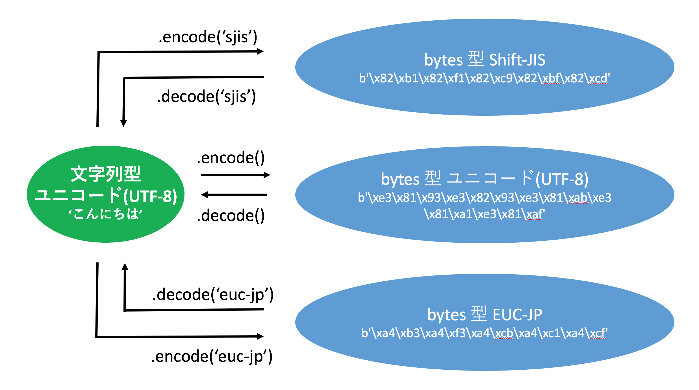

日本語の扱い
概要
そもそもPythonのプログラムファイルもプログラムが書かれたテキストファイルです。 そのため、それがどの文字コードを利用しているかということを 「プログラクラムを読み込むPython」に正しく認識させる必要があります。 ブラウザやテキストエディタが文字化けしてしまうのと同じように、 Python も文字コードが分からないと内部に書かれているプログラムを解釈できずに実行できません。
プログラムファイル内での文字コードの宣言
Python3 はUTF-8 をデフォルトの文字コードとしているため、 UTF-8以外を使う場合は「この文字コードを使います」とファイルの先頭で宣言します。 英数字のみで構成されるASCII も宣言は不要です。 その宣言は以下のように行います。なお、本書執筆時点においてIDLEでの日本語の扱いは正直あまりよいとはいえません。 もし日本語を使いたいのであればなんらかの高機能なテキストエディタを利用して記述し、 適切な文字コードに設定されたプロンプトなり、ターミナルなりで実行してください。
# coding: utf-8 print('hello python') print('あいうえお python')
上記の「utf-8」と書かれている場所が文字コードの宣言です。 utf-8と宣言しているので、utf-8以外で書かれているとトラブルが発生します。 ここを「shift-jis」や「euc-jp」などに変えると、その文字コードとして解釈されます。 宣言の先頭が#から始まっていることから理解してもらえると思いますが、 この行はコメントアウトされているのでPythonはプログラムとしては解釈しません。 なお、先にも述べたように UTF-8 はデフォルトであるため、あえて宣言する必要はありません。
この UTF-8 で書かれたプログラムを実行すると以下のように表示されます。
% python3 test.py hello python あいうえお python
試しにファイルで利用される文字コードはUTF-8のままで、宣言をshift-jisに変更してみます。
# coding: shift-jis print('hello python') print('あいうえお python')
これを実行してみます。
$ python3 test.py File "test.py", line 1 SyntaxError: encoding problem: shift-jis
エラーが出て、「shift-jis のエンコーディングの問題がある」と怒られてしまっています。 このように文字コードAを文字コードBとして読み込もうとするとトラブルが発生してしまいます。 トラブルはこのようなエラーであったり、場合によっては文字化けだったりします。
ではファイルの文字コードをShift-JISに変更して実行してみます。 これでファイルの文字コードと冒頭の宣言の文字コードが一致します。
$ python3 test.py hello python あいうえお python
実は Python3はプログラムファイルの文字コードとその宣言の指定さえ間違えなければ、 日本語などのマルチバイト文字をほとんど意識せずにアルファベットと同じ感覚で使えます。 Python 2では文字列型の亜種である「Unicode文字列型」を使うことで日本語を扱っていたのに比べると随分と簡単になりました。
日本語ファイルの読み書き
ファイルの入出力にはcodecsパッケージのopen関数を使うのが簡単です。 これを使って文字コードを指定してファイルをオープンすると、 通常のファイル入出力の手順と大差なくマルチバイト文字を扱えます。 具体的には read をすると文字コードを意識してファイルのテキストを読み込んでユニコードの文字列を返し、 write でユニコードの文字列を書き出すとそれが指定された文字コードでファイルに書かれます。 以下の図にこの流れを記載します。

上記の「ファイル名」は読み書きするファイル名を相対パスなり絶対パスなりで指定し、 「モード」は通常の open 関数と同じで r,w,rw,aなどを指定します。 そして最後の「文字コード」で読み書きするファイルのエンコードを指定します。 この open 関数のみ文字コードを意識する必要がありますが、 それ以外の read や write は今までのファイルの読み書きと同じです。 Shift-Jis として読み込みを行えば、read をすれば Shift-Jis としてファイルの中身を読み込んで、 それをユニコードの文字列として返します。書き出しも同様です。
実際にコードで確認してみます。 文字コードutf8 で書かれた以下のファイル utf8.txt を作成してください。
あいうえお abcde かきくけこ
このファイルを読み込み処理するコードは以下となります。
import codecs f = codecs.open('utf8.txt', 'r', 'utf-8') for line in f: print(line, end='') f.close()
先程説明したようにcodecs.open関数の第一引数でファイル名を指定し、 第二引数でオープンのモード(今回はread)を選択、そして第三の引数でファイルの文字コードを指定しています。 それ以外は通常のファイル読み込みと同じです。 これを出力してみます。
$ python3 test.py あいうえお abcde かきくけこ
変数 line に格納されているファイルから読み込まれたデータは通常の文字列型です。 読み込んだあとは文字コードを気にする必要は一切ありません。 次に書き込みをしてみます。このutf8のファイルをShift-JISで書きだしてみます。
import codecs fin = codecs.open('utf8.txt', 'r', 'utf-8') fout = codecs.open('sjis.txt', 'w', 'sjis') for line in fin: fout.write(line) fin.close() fout.close()
ファイルのオープン時にオープンモードをwにすることで書き込みファイルとして開いています。 オープンしたファイルに対してUnicode文字列をwriteしてあげればファイルに文字列が追加されます。
結果を確認してみます。ファイルのエンコーディングの判定をしてみます。
$ nkf --guess utf8.txt UTF-8 (LF) $ nkf --guess sjis.txt Shift_JIS (LF)
書き込みファイルsjis.txtの文字コードがShift-Jisと判定されています。 UTF8のファイルを読み取り、それを解釈、Shift-Jisとして書き込むという動作がうまく動いています。 なお上記の nkf コマンドはインストールをしないと使えないので注意してください。
文字コードの変換
先ほど見たように文字コードもバイト列で作られています。 例えば UTF-8の文字列を Shift-Jis に変換するといった場合、このバイト列の処理が必要になります。 実際は Python のライブラリ任せになるのでそれほど難しくありませんが、 おおまかに以下の図のような文字列とバイト列の関係の認識を持ってもらうと分かりやすいです。

まず Python は文字列としてユニコード(UTF-8)を持ちます。 一方、バイト列は単なる 0,1 の組み合わせですのでどのような文字コードでも持つことができます。 先程説明した文字列の encode 及びバイト列の decode メソッドを、 文字コードを引数として与えて呼び出して変換ができます。 文字列から Shift-Jis の変換は簡単で、 単に encode する際に引数に Shift-JIS を指定して Shift-JIS のバイト列に変換するだけです。 Shift-JIS から EUC-JP への変換も、Shift-JIS を引数 shift-jis で decode し、 ユニコードの文字列にし、それから引数 euc-jp で encode してあげれば EUC-JP のバイト列が得られます。 上記変換のサンプルを以下に記載します。
text = 'こんにちは' unicode_bytes = text.encode() print(unicode_bytes) # b'\xe3\x81\x93\xe3\x82\x93\xe3\x81\xab\xe3\x81\xa1\xe3\x81\xaf' print(unicode_bytes.decode()) # こんにちは sjis_bytes = text.encode('sjis') print(sjis_bytes) # b'\x82\xb1\x82\xf1\x82\xc9\x82\xbf\x82\xcd' print(sjis_bytes.decode('sjis')) # こんにちは eucjp_bytes = text.encode('euc-jp') print(eucjp_bytes) # b'\xa4\xb3\xa4\xf3\xa4\xcb\xa4\xc1\xa4\xcf' print(eucjp_bytes.decode('euc-jp')) # こんにちは
文字列はユニコードであり、エンコードを指定してバイト列を書き出すことで様々な文字コードを表現できる。 それらをエンコードの指定をして読み込むことでPython のユニコード文字列に変換することができる。 この流れは日本語以外にもあてはまりますので覚えておいて下さい。
 印刷する
印刷する